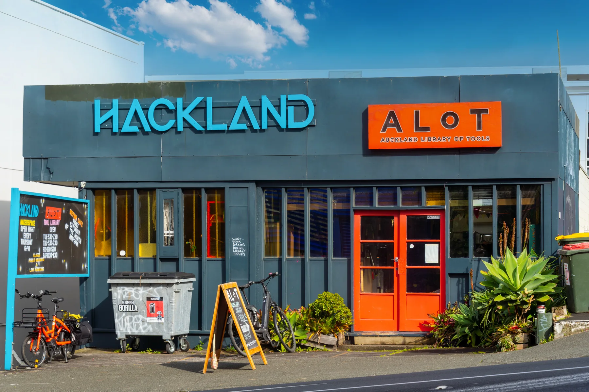
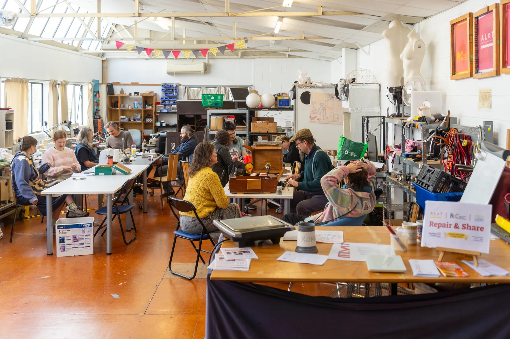

Community volunteering · Auckland
Volunteer, Auckland Library of Tools (ALoT)
I volunteer in a community space built around repairing, sharing and practical making. The work puts me in conversations with people who have very different levels of technical confidence, so I practise listening, explaining clearly and helping without taking over someone else's job.

CommunityA public workshop and tool-sharing environment
Repair + reusePractical work with a lower-waste mindset
CommunicationListening and explaining across different skill levels
PhotographyDocumenting the place, people and atmosphere
What I Contribute
- Support community sessions and help keep the shared workshop welcoming and organised.
- Listen to what someone is trying to achieve before discussing tools or possible next steps.
- Explain practical ideas in plain language without assuming prior technical knowledge.
- Use photography to document the character of a community centred on making, repair and reuse.

Why This Belongs in My Engineering Portfolio
People
Communication without jargon
Useful engineering starts with understanding the person, task and constraint in front of you.
Practice
Respect for repair and existing products
Working around real objects builds better judgement about access, durability and maintainability.
Community
Contributing before asking
The experience is part of how I am learning to participate in Auckland beyond university coursework.
Experience boundary
This is community volunteering, not paid employment or a trade qualification. I include it because it is real evidence of communication, reliability and practical participation.